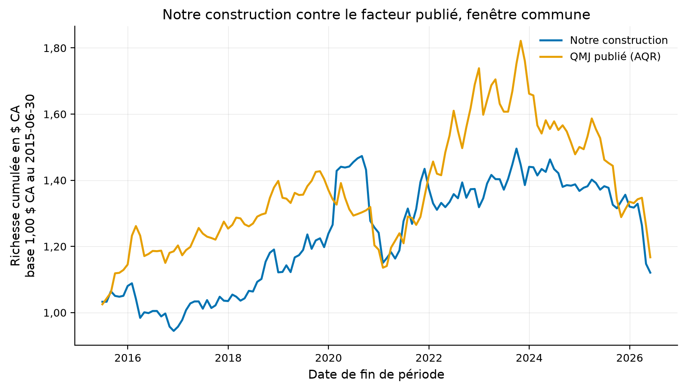
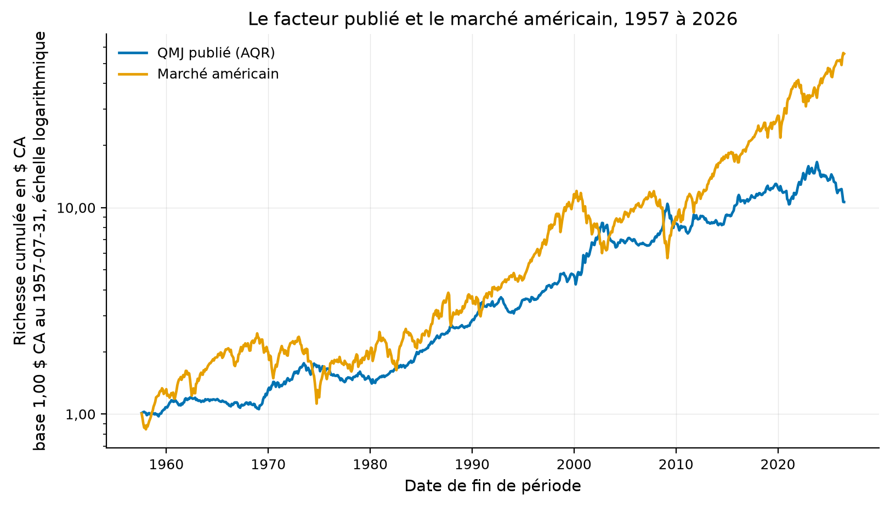
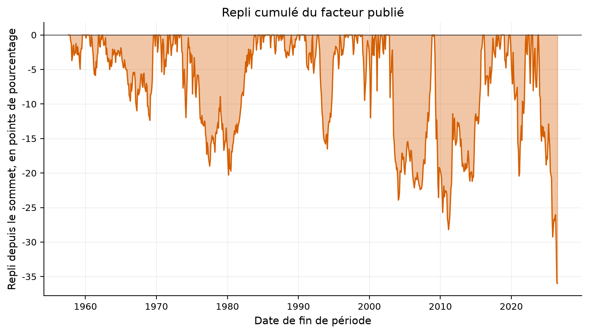
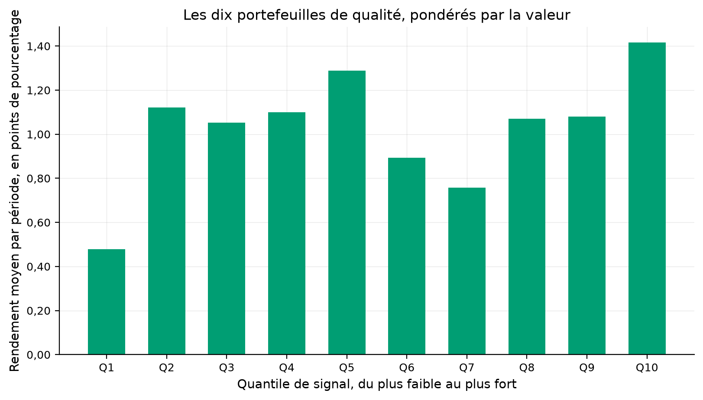
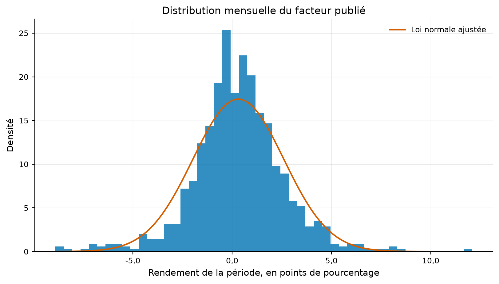
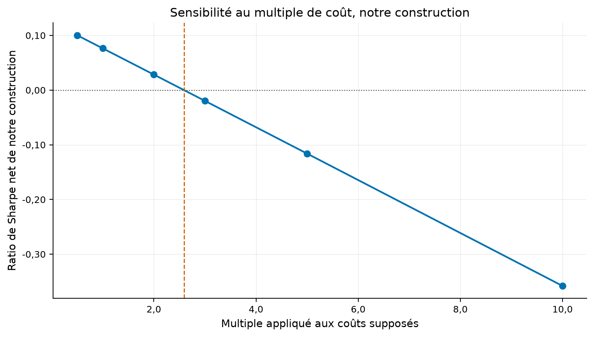
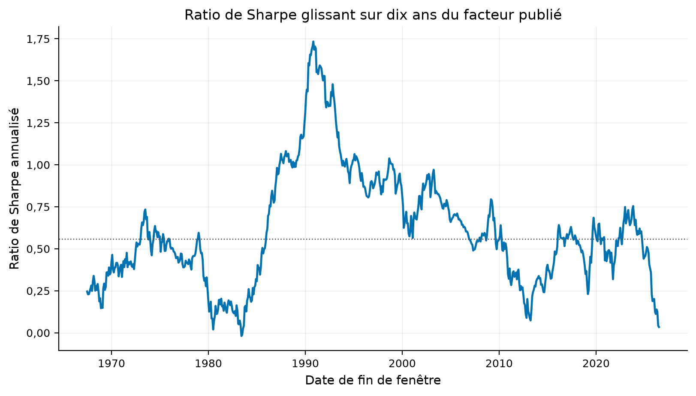
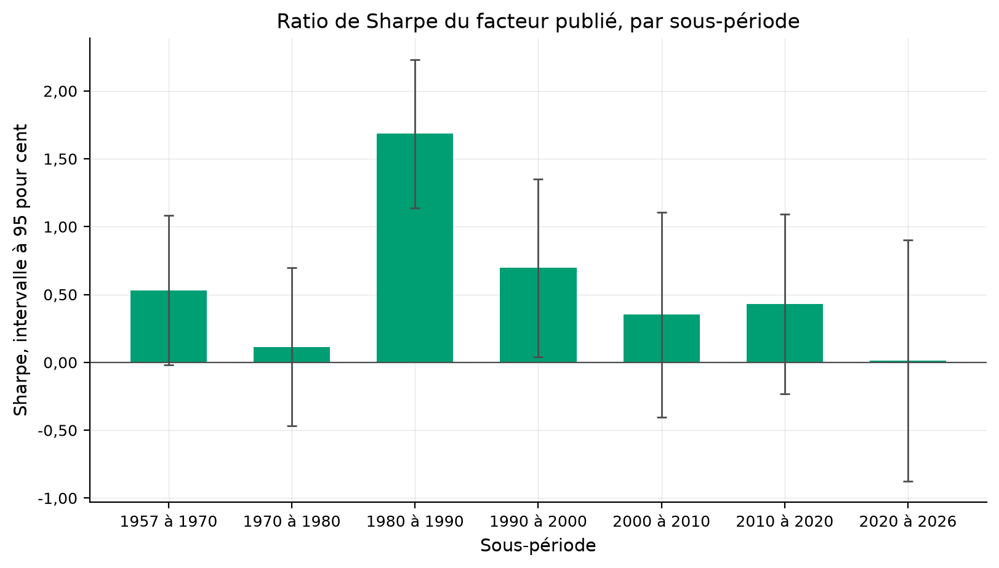
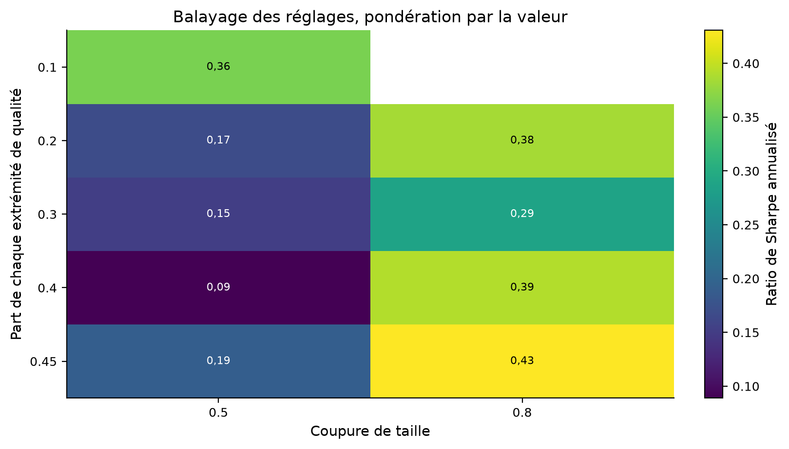
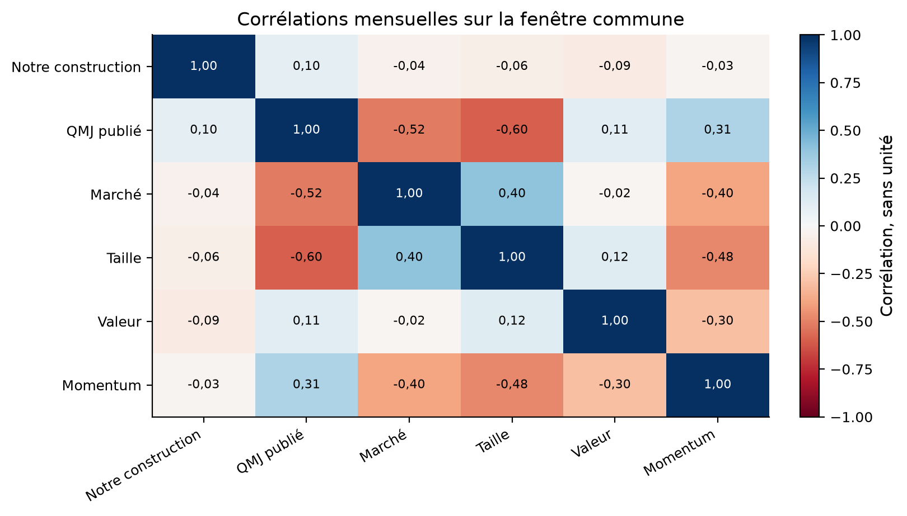

Verdict : EXPERIMENTAL
Un portefeuille long des sociétés rentables, en croissance, sûres et distributrices, et court des autres, dégage-t-il un rendement excédentaire positif ? Et le score reconstruit depuis les fondamentaux publics reproduit-il le facteur publié ?
Asness, Frazzini et Pedersen (2019), Quality Minus Junk, Review of Accounting Studies 24(1). La version publiée n'a pas été obtenue ; les chiffres cibles viennent de la version de travail du 19 juin 2014.
Vingt et une variables comptables et boursières deviennent des cotes de rang transversales, s'agrègent en quatre composantes, puis en un score. Le facteur est un tri conditionnel, la taille d'abord, la qualité ensuite, pondéré par la valeur.
Le facteur publié vient d'AQR. Les fondamentaux viennent des jeux trimestriels de la SEC, dont la date de dépôt rend le point-in-time natif. Les prix viennent de Yahoo, dont le biais du survivant est déclaré.
| grandeur | valeur |
|---|---|
| rendements mensuels non manquants | 267425.000000 |
| rendement mensuel maximal | 2.902778 |
| rendement mensuel minimal | -0.988095 |
| rendements au-dessus de cent pour cent | 187.000000 |
| rendements au-dessous de moins cinquante pour cent | 246.000000 |
| centile 99,9 | 0.870394 |
| centile 0,1 | -0.492207 |
| prix de clôture bruts retirés parce que nuls ou négatifs | 0.000000 |
| prix ajustés retirés parce que nuls ou négatifs | 3511.000000 |
| rendements mensuels retirés par le garde-fou | 18.000000 |
| rendements quotidiens retirés par le garde-fou | 20.000000 |
| plus grand rendement mensuel retiré | 309.909111 |
| grandeur | valeur |
|---|---|
| sociétés candidates au crible de taille | 2534.0 |
| sociétés retrouvées dans la carte des symboles | 1557.0 |
| symboles rendus par Yahoo | 1526.0 |
| sociétés au panneau de caractéristiques | 1526.0 |
| lignes du panneau | 178005.0 |
| lignes de volatilité des bénéfices | 710612.0 |
| mois du facteur reconstruit | 132.0 |
| cases de prix retirées par le nettoyage | 3511.0 |
| lignes du panneau avant le crible du jour | 178005.0 |
| lignes du panneau après le crible du jour | 147289.0 |
| variable | part_renseignee | composante |
|---|---|---|
| gpoa | 0.541330 | profitability |
| roe | 0.936370 | profitability |
| roa | 0.985104 | profitability |
| cfoa | 0.697696 | profitability |
| gmar | 0.538465 | profitability |
| acc | 0.708933 | profitability |
| d_gpoa | 0.468120 | growth |
| d_roe | 0.823381 | growth |
| d_roa | 0.885653 | growth |
| d_cfoa | 0.357963 | growth |
| d_gmar | 0.459607 | growth |
| d_acc | 0.368412 | growth |
| bab | 0.952990 | safety |
| ivol | 0.952990 | safety |
| lev | 1.000000 | safety |
| o_score | 0.361989 | safety |
| z_score | 0.500913 | safety |
| evol | 0.929133 | safety |
| eiss | 0.848767 | payout |
| diss | 0.839309 | payout |
| npop | 0.434853 | payout |
La construction vit dans quantlab.strategies.quality_minus_junk. Le décalage d'exécution se fait en un seul endroit, dans le tableau de rendements avancés que l'étude fournit au constructeur du facteur.
Une donnée comptable entre par sa date de dépôt. Une société sans rendement au mois suivant sort de sa jambe, et les poids restants sont renormalisés. L'indice des prix de la cote d'Ohlson vaut un, ce qui ne déplace aucun rang.
Le facteur publié rend 0.35 pour cent par mois sur la fenêtre de l'article, contre 0,40 publié. Notre construction corrèle à 0.10 avec lui.
| quantity | published | ours | absolute_error | relative_error | tolerance | tolerance_kind | verdict | source |
|---|---|---|---|---|---|---|---|---|
| Rendement excédentaire mensuel, États-Unis | 0.40 | 0.347173 | 0.052827 | 0.132068 | 0.25 | relative | répliqué | Tableau VI, version de travail du 19 juin 2014 |
| Ratio de Sharpe annualisé, États-Unis | 0.58 | 0.559467 | 0.020533 | 0.035402 | 0.25 | relative | répliqué | Tableau VI, version de travail du 19 juin 2014 |
| Alpha à quatre facteurs, mensuel, États-Unis | 0.66 | 0.521661 | 0.138339 | 0.209605 | 0.25 | relative | répliqué | Tableau VI, version de travail du 19 juin 2014 |
| Chargement sur la taille, quatre facteurs | -0.38 | -0.299714 | 0.080286 | 0.211278 | 0.25 | relative | répliqué | Tableau VI, version de travail du 19 juin 2014 |
| Chargement sur le marché, quatre facteurs | -0.25 | -0.229754 | 0.020246 | 0.080984 | 0.25 | relative | répliqué | Tableau VI, version de travail du 19 juin 2014 |
| Corrélation de notre construction avec le facteur publié | 1.00 | 0.098292 | 0.901708 | 0.901708 | 0.50 | absolute | écart | Contrôle propre à l'étude, seuil écrit dans config.yaml |
| quantity | published | ours | absolute_error | relative_error | tolerance | tolerance_kind | verdict | source |
|---|---|---|---|---|---|---|---|---|
| Rendement excédentaire mensuel, États-Unis | 0.40 | 0.347173 | 0.052827 | 0.132068 | 0.25 | relative | répliqué | Tableau VI, version de travail du 19 juin 2014 |
| Ratio de Sharpe annualisé, États-Unis | 0.58 | 0.559467 | 0.020533 | 0.035402 | 0.25 | relative | répliqué | Tableau VI, version de travail du 19 juin 2014 |
| Alpha à quatre facteurs, mensuel, États-Unis | 0.66 | 0.521661 | 0.138339 | 0.209605 | 0.25 | relative | répliqué | Tableau VI, version de travail du 19 juin 2014 |
| Chargement sur la taille, quatre facteurs | -0.38 | -0.299714 | 0.080286 | 0.211278 | 0.25 | relative | répliqué | Tableau VI, version de travail du 19 juin 2014 |
| Chargement sur le marché, quatre facteurs | -0.25 | -0.229754 | 0.020246 | 0.080984 | 0.25 | relative | répliqué | Tableau VI, version de travail du 19 juin 2014 |
| Corrélation de notre construction avec le facteur publié | 1.00 | 0.098292 | 0.901708 | 0.901708 | 0.50 | absolute | écart | Contrôle propre à l'étude, seuil écrit dans config.yaml |
| serie | debut | fin | n_mois | rendement_mensuel_pct | ecart_type_mensuel_pct | tstat | sharpe_annuel | pire_repli | asymetrie | aplatissement | part_de_mois_positifs | correlation_avec_le_publie |
|---|---|---|---|---|---|---|---|---|---|---|---|---|
| Notre facteur, fenêtre commune | 2015-06-30 | 2026-05-31 | 132 | 0.130387 | 2.970692 | 0.455133 | 0.152043 | -0.250663 | -0.130141 | 3.509848 | 0.568182 | 0.098292 |
| QMJ publié, fenêtre commune | 2015-06-30 | 2026-05-31 | 132 | 0.162044 | 2.994784 | 0.587702 | 0.187439 | -0.359230 | -0.435598 | 0.520198 | 0.560606 | 1.000000 |
| n_mois | alpha_mensuel_pct | alpha_tstat | beta_qmj_publie | tstat_beta | r2_ajuste | correlation |
|---|---|---|---|---|---|---|
| 132 | 0.114588 | 0.415121 | 0.097501 | 1.159423 | 0.002043 | 0.098292 |
| serie | debut | fin | n_mois | rendement_mensuel_pct | ecart_type_mensuel_pct | tstat | sharpe_annuel | pire_repli | asymetrie | aplatissement | part_de_mois_positifs | composante | correlation_avec_le_publie | alpha_papier_mensuel_pct |
|---|---|---|---|---|---|---|---|---|---|---|---|---|---|---|
| Rentabilité | 2015-06-30 | 2026-05-31 | 132 | 0.107577 | 2.572661 | 0.439989 | 0.144853 | -0.221357 | -0.004437 | 1.569598 | 0.545455 | profitability | 0.098792 | 0.53 |
| Croissance | 2015-06-30 | 2026-05-31 | 132 | 0.385984 | 2.401294 | 1.582508 | 0.556820 | -0.153890 | -0.017321 | 0.198083 | 0.583333 | growth | -0.016924 | 0.38 |
| Sûreté | 2015-06-30 | 2026-05-31 | 132 | -0.241805 | 3.285093 | -0.921274 | -0.254981 | -0.456610 | -0.612672 | 2.577891 | 0.484848 | safety | 0.037136 | 0.57 |
| Distribution | 2015-06-30 | 2026-05-31 | 132 | 0.259047 | 1.463896 | 1.893637 | 0.612998 | -0.106733 | -0.002640 | 0.350991 | 0.575758 | payout | 0.131318 | 0.21 |
| serie | n_mois | Notre facteur | Notre rentabilité | Notre croissance | Notre sûreté | Notre distribution | QMJ publié | Rentabilité (French) | Croissance (French) | Sûreté (French) | Marché |
|---|---|---|---|---|---|---|---|---|---|---|---|
| Notre facteur | 132 | 1.000000 | 0.923720 | 0.561397 | 0.766406 | 0.478191 | 0.098292 | 0.174488 | -0.011200 | 0.068189 | -0.040715 |
| Notre rentabilité | 132 | 0.923720 | 1.000000 | 0.569115 | 0.616766 | 0.508735 | 0.098792 | 0.149319 | -0.042084 | 0.028032 | -0.042347 |
| Notre croissance | 132 | 0.561397 | 0.569115 | 1.000000 | 0.190102 | 0.008297 | -0.016924 | 0.093159 | -0.016508 | 0.033051 | -0.095566 |
| Notre sûreté | 132 | 0.766406 | 0.616766 | 0.190102 | 1.000000 | 0.289648 | 0.037136 | 0.031710 | 0.036079 | 0.031150 | 0.064558 |
| Notre distribution | 132 | 0.478191 | 0.508735 | 0.008297 | 0.289648 | 1.000000 | 0.131318 | 0.153841 | 0.033101 | 0.046953 | -0.008256 |
| QMJ publié | 132 | 0.098292 | 0.098792 | -0.016924 | 0.037136 | 0.131318 | 1.000000 | 0.671204 | 0.386197 | 0.685827 | -0.517018 |
| Rentabilité (French) | 132 | 0.174488 | 0.149319 | 0.093159 | 0.031710 | 0.153841 | 0.671204 | 1.000000 | 0.187023 | 0.562951 | -0.270071 |
| Croissance (French) | 132 | -0.011200 | -0.042084 | -0.016508 | 0.036079 | 0.033101 | 0.386197 | 0.187023 | 1.000000 | 0.564036 | -0.296632 |
| Sûreté (French) | 132 | 0.068189 | 0.028032 | 0.033051 | 0.031150 | 0.046953 | 0.685827 | 0.562951 | 0.564036 | 1.000000 | -0.593729 |
| Marché | 132 | -0.040715 | -0.042347 | -0.095566 | 0.064558 | -0.008256 | -0.517018 | -0.270071 | -0.296632 | -0.593729 | 1.000000 |

Tous les chiffres portent leur échantillon et leur base de coût dans le tableau des métriques.
| metric | value | sample | cost_basis |
|---|---|---|---|
| publie_rendement_mensuel_is_pct | 3.471727e-01 | IS | gross |
| publie_sharpe_is | 5.594671e-01 | IS | gross |
| publie_alpha_4f_is_pct | 5.216608e-01 | IS | gross |
| publie_rendement_mensuel_oos_pct | 1.682524e-01 | FINAL_HOLDOUT | gross |
| publie_sharpe_oos_brut | 2.092772e-01 | FINAL_HOLDOUT | gross |
| publie_sharpe_oos_net | 1.582011e-01 | FINAL_HOLDOUT | net |
| publie_alpha_4f_oos_pct | 2.938144e-01 | FINAL_HOLDOUT | gross |
| ecart_de_sharpe_z | 1.067711e+00 | FINAL_HOLDOUT | gross |
| notre_rendement_mensuel_pct | 1.303870e-01 | OOS | gross |
| notre_sharpe | 1.520433e-01 | OOS | gross |
| correlation_avec_le_publie | 9.829167e-02 | OOS | gross |
| beta_sur_le_publie | 9.750094e-02 | OOS | gross |
| alpha_sur_le_publie_mensuel_pct | 1.145875e-01 | OOS | gross |
| rotation_annualisee | 4.927629e+00 | OOS | gross |
| cout_de_rentabilite_bps | 2.590530e+01 | OOS | gross |
| sharpe_net_reference | 7.630317e-02 | OOS | net |
| probabilite_de_surapprentissage | 0.000000e+00 | OOS | gross |
| sharpe_degonfle | 4.946244e-08 | FINAL_HOLDOUT | net |
| t_apres_correction | 0.000000e+00 | FINAL_HOLDOUT | net |
| part_de_sous_periodes_positives | 1.000000e+00 | IS | gross |
| correlation_avec_le_marche | -4.930858e-01 | FINAL_HOLDOUT | gross |
| cpcv_sharpe_moyen | 3.006296e-01 | FINAL_HOLDOUT | net |
| cpcv_part_de_chemins_negatifs | 0.000000e+00 | FINAL_HOLDOUT | net |
| proxy_sharpe | 4.011529e-02 | IS | gross |
| proxy_correlation | 6.844115e-01 | IS | gross |
| serie | debut | fin | n_mois | rendement_mensuel_pct | ecart_type_mensuel_pct | tstat | sharpe_annuel | pire_repli | asymetrie | aplatissement | part_de_mois_positifs |
|---|---|---|---|---|---|---|---|---|---|---|---|
| QMJ États-Unis, échantillon complet | 1957-07-31 | 2026-06-30 | 828 | 0.312167 | 2.287082 | 3.454951 | 0.472819 | -0.359878 | -0.013847 | 2.472829 | 0.551932 |
| QMJ États-Unis, fenêtre de l'article | 1957-07-31 | 2012-12-31 | 666 | 0.347173 | 2.149620 | 3.663216 | 0.559467 | -0.282064 | 0.234160 | 3.037384 | 0.549550 |
| QMJ États-Unis, après publication | 2013-01-31 | 2026-06-30 | 162 | 0.168252 | 2.785031 | 0.721016 | 0.209277 | -0.359878 | -0.425586 | 0.887043 | 0.561728 |
| portefeuille | rendement_mensuel_pct | ecart_type_mensuel_pct | sharpe_annuel |
|---|---|---|---|
| Q1 | 0.477420 | 8.922767 | 0.185350 |
| Q2 | 1.121236 | 5.718083 | 0.679262 |
| Q3 | 1.051656 | 5.545234 | 0.656969 |
| Q4 | 1.099433 | 4.807366 | 0.792232 |
| Q5 | 1.288899 | 5.173897 | 0.862962 |
| Q6 | 0.892295 | 4.799968 | 0.643963 |
| Q7 | 0.757555 | 4.446872 | 0.590133 |
| Q8 | 1.070420 | 4.413544 | 0.840151 |
| Q9 | 1.080042 | 4.165730 | 0.898132 |
| Q10 | 1.415645 | 4.495214 | 1.090924 |
| spread | 0.938225 | 7.563647 | 0.429701 |




La rotation annualisée de notre construction vaut 4.93 et le coût qui annule le rendement brut vaut 26 points de base.
| cout_bps | rendement_mensuel_pct | sharpe_annuel | rotation_annualisee |
|---|---|---|---|
| 0.0 | 0.106376 | 0.124107 | 4.927629 |
| 5.0 | 0.085845 | 0.100223 | 4.927629 |
| 10.0 | 0.065313 | 0.076303 | 4.927629 |
| 20.0 | 0.024249 | 0.028365 | 4.927629 |

Les parts de qualité, la coupure de taille, la pondération et le délai d'exécution sont balayés, et chaque case compte pour un essai.
| pays | n_mois | sharpe_total | tstat_total | sharpe_avant | sharpe_apres | tstat_apres |
|---|---|---|---|---|---|---|
| SWE | 372 | 0.774770 | 3.616466 | 0.557465 | 1.225036 | 4.985962 |
| DEU | 372 | 0.653016 | 3.404051 | 0.743826 | 0.514277 | 2.003271 |
| CAN | 444 | 0.644810 | 3.531288 | 0.799104 | 0.361999 | 1.253036 |
| GBR | 396 | 0.550903 | 2.738260 | 0.411916 | 0.787959 | 2.455534 |
| ITA | 372 | 0.492165 | 2.661379 | 0.753671 | 0.178566 | 0.712636 |
| FRA | 372 | 0.474124 | 2.624265 | 0.454919 | 0.498909 | 2.059900 |
| HKG | 360 | 0.473389 | 2.846383 | 0.469764 | 0.550404 | 2.289554 |
| USA | 828 | 0.472819 | 3.454951 | 0.559467 | 0.209277 | 0.721016 |
| NOR | 372 | 0.469065 | 2.235975 | 0.167485 | 0.958277 | 3.130240 |
| CHE | 372 | 0.433893 | 2.445027 | 0.384008 | 0.556575 | 2.047930 |
| AUS | 360 | 0.427411 | 2.048564 | 0.590693 | 0.235724 | 0.726756 |
| GRC | 300 | 0.424706 | 1.959288 | 0.519905 | 0.359044 | 1.192718 |
| PRT | 312 | 0.400900 | 1.863593 | 0.479204 | 0.341981 | 1.225178 |
| ISR | 288 | 0.333319 | 1.408251 | 0.348199 | 0.322598 | 1.152272 |
| DNK | 372 | 0.333186 | 1.783225 | 0.489532 | 0.145595 | 0.543187 |
| SGP | 360 | 0.315008 | 1.314019 | 0.133393 | 0.889254 | 2.905877 |
| NLD | 372 | 0.303246 | 1.771113 | 0.146722 | 0.513040 | 1.905385 |
| JPN | 396 | 0.270310 | 1.512775 | 0.292452 | 0.240683 | 0.845581 |
| IRL | 369 | 0.247037 | 1.304133 | 0.298983 | 0.173325 | 0.596273 |
| AUT | 372 | 0.146081 | 0.741861 | 0.477618 | -0.346468 | -1.273358 |
| BEL | 372 | 0.144785 | 0.737874 | 0.178498 | 0.094997 | 0.387517 |
| ESP | 360 | 0.126144 | 0.670218 | 0.172444 | 0.072779 | 0.268921 |
| NZL | 360 | 0.123929 | 0.896224 | 0.034964 | 0.261372 | 1.143449 |
| FIN | 372 | 0.008550 | 0.044491 | -0.029829 | 0.091742 | 0.356552 |
| label | start | end | n_observations | total_return | cagr | volatility | sharpe | sharpe_se_iid | sharpe_se_lo | t_stat | max_drawdown | hit_rate |
|---|---|---|---|---|---|---|---|---|---|---|---|---|
| 1957 à 1970 | 1957-07-31 | 1970-11-30 | 161 | 0.423618 | 0.026675 | 0.052169 | 0.530918 | 0.274608 | 0.281512 | 1.885953 | -0.123710 | 0.509317 |
| 1970 à 1980 | 1970-12-31 | 1980-11-30 | 120 | 0.057868 | 0.005641 | 0.070852 | 0.114631 | 0.316314 | 0.297676 | 0.385086 | -0.202882 | 0.516667 |
| 1980 à 1990 | 1980-12-31 | 1990-11-30 | 120 | 1.265274 | 0.085206 | 0.049391 | 1.685484 | 0.334420 | 0.278906 | 6.043189 | -0.033069 | 0.708333 |
| 1990 à 2000 | 1990-12-31 | 2000-11-30 | 120 | 0.725363 | 0.056059 | 0.083402 | 0.695974 | 0.319403 | 0.334269 | 2.082080 | -0.165015 | 0.550000 |
| 2000 à 2010 | 2000-12-31 | 2010-11-30 | 120 | 0.364342 | 0.031555 | 0.103634 | 0.351631 | 0.317041 | 0.385763 | 0.911522 | -0.257031 | 0.475000 |
| 2010 à 2020 | 2010-12-31 | 2020-11-30 | 120 | 0.368644 | 0.031880 | 0.080444 | 0.430502 | 0.317446 | 0.337077 | 1.277162 | -0.156840 | 0.600000 |
| 2020 à 2026 | 2020-12-31 | 2026-06-30 | 67 | -0.031171 | -0.005656 | 0.119947 | 0.012319 | 0.423209 | 0.453603 | 0.027158 | -0.359878 | 0.492537 |
| serie | debut | fin | n_mois | rendement_mensuel_pct | ecart_type_mensuel_pct | tstat | sharpe_annuel | pire_repli | asymetrie | aplatissement | part_de_mois_positifs | correlation_avec_le_publie |
|---|---|---|---|---|---|---|---|---|---|---|---|---|
| profitability | 1963-07-31 | 2026-06-30 | 756 | 0.220622 | 2.596363 | 2.133703 | 0.294356 | -0.347594 | 0.226788 | 2.886324 | 0.523810 | 0.721370 |
| growth | 1963-07-31 | 2026-06-30 | 756 | 0.181614 | 2.652103 | 1.757716 | 0.237219 | -0.383775 | 0.132017 | 2.732114 | 0.529101 | 0.163636 |
| safety | 1963-07-31 | 2026-06-30 | 756 | -0.300357 | 5.852764 | -1.342737 | -0.177774 | -0.973570 | -0.220299 | 1.625812 | 0.497354 | 0.634612 |
| proxy | 1963-07-31 | 2026-06-30 | 756 | 0.033959 | 2.932521 | 0.299949 | 0.040115 | -0.534784 | 0.001094 | 4.042330 | 0.513228 | 0.684411 |
| quality_quantile | size_quantile | ponderation | n_mois | rendement_mensuel_pct | sharpe_annuel | correlation_avec_le_publie | etat |
|---|---|---|---|---|---|---|---|
| 0.30 | 0.5 | value | 132 | 0.130387 | 0.152043 | 0.098292 | calculé |
| 0.30 | 0.5 | equal | 132 | -0.170976 | -0.211256 | 0.088705 | calculé |
| 0.30 | 0.8 | value | 132 | 0.225238 | 0.287683 | 0.086531 | calculé |
| 0.30 | 0.8 | equal | 132 | -0.083449 | -0.109975 | 0.045445 | calculé |
| 0.10 | 0.5 | value | 132 | 0.515500 | 0.362164 | 0.122719 | calculé |
| 0.10 | 0.5 | equal | 132 | -0.200574 | -0.140947 | 0.086875 | calculé |
| 0.10 | 0.8 | value | 0 | 0.000000 | aucune date ne remplit les quatre coins | ||
| 0.10 | 0.8 | equal | 0 | 0.000000 | aucune date ne remplit les quatre coins | ||
| 0.20 | 0.5 | value | 132 | 0.187783 | 0.167784 | 0.082854 | calculé |
| 0.20 | 0.5 | equal | 132 | -0.163564 | -0.153830 | 0.069508 | calculé |
| 0.20 | 0.8 | value | 132 | 0.386008 | 0.384873 | 0.064698 | calculé |
| 0.20 | 0.8 | equal | 132 | -0.062391 | -0.064199 | 0.067640 | calculé |
| 0.40 | 0.5 | value | 132 | 0.062253 | 0.088990 | 0.100360 | calculé |
| 0.40 | 0.5 | equal | 132 | -0.139781 | -0.211862 | 0.049109 | calculé |
| 0.40 | 0.8 | value | 132 | 0.246269 | 0.391129 | 0.070420 | calculé |
| 0.40 | 0.8 | equal | 132 | -0.023912 | -0.038231 | 0.041881 | calculé |
| 0.45 | 0.5 | value | 132 | 0.119065 | 0.191277 | 0.110124 | calculé |
| 0.45 | 0.5 | equal | 132 | -0.105489 | -0.177916 | 0.066859 | calculé |
| 0.45 | 0.8 | value | 132 | 0.245602 | 0.430710 | 0.070231 | calculé |
| 0.45 | 0.8 | equal | 132 | -0.003730 | -0.006657 | 0.037589 | calculé |
| delai_mois | n_mois | rendement_mensuel_pct | sharpe_annuel |
|---|---|---|---|
| 1 | 132 | 0.130387 | 0.152043 |
| 2 | 131 | 0.130693 | 0.156856 |
| 3 | 130 | 0.045243 | 0.053675 |



Le facteur publié rend 0.21 de ratio de Sharpe après la publication, contre 0.56 avant. L'écart des deux vaut 1.07 erreur type.
| statistique | valeur |
|---|---|
| count | 7.000000 |
| mean | 0.300630 |
| median | 0.279913 |
| std | 0.105692 |
| min | 0.179691 |
| max | 0.430710 |
| quantile_low | 0.186091 |
| quantile_high | 0.422721 |
| quantile_low_level | 0.050000 |
| quantile_high_level | 0.950000 |
| negative_share | 0.000000 |
Le ratio de Sharpe dégonflé, la probabilité de surapprentissage et la correction de Holm sur les pays sont rapportés dans les tableaux joints.
| pays | tstat_apres_publication | p_brute | p_corrigee_holm | rejetee |
|---|---|---|---|---|
| SWE | 4.985962 | 6.165428e-07 | 0.000015 | True |
| NOR | 3.130240 | 1.746633e-03 | 0.040173 | True |
| SGP | 2.905877 | 3.662260e-03 | 0.080570 | False |
| GBR | 2.455534 | 1.406753e-02 | 0.295418 | False |
| HKG | 2.289554 | 2.204720e-02 | 0.440944 | False |
| CHE | 2.047930 | 4.056685e-02 | 0.748753 | False |
| FRA | 2.059900 | 3.940806e-02 | 0.748753 | False |
| DEU | 2.003271 | 4.514819e-02 | 0.767519 | False |
| NLD | 1.905385 | 5.673004e-02 | 0.907681 | False |
| AUS | 0.726756 | 4.673754e-01 | 1.000000 | False |
| PRT | 1.225178 | 2.205081e-01 | 1.000000 | False |
| NZL | 1.143449 | 2.528521e-01 | 1.000000 | False |
| JPN | 0.845581 | 3.977866e-01 | 1.000000 | False |
| ITA | 0.712636 | 4.760709e-01 | 1.000000 | False |
| GRC | 1.192718 | 2.329798e-01 | 1.000000 | False |
| IRL | 0.596273 | 5.509929e-01 | 1.000000 | False |
| FIN | 0.356552 | 7.214270e-01 | 1.000000 | False |
| ESP | 0.268921 | 7.879908e-01 | 1.000000 | False |
| DNK | 0.543187 | 5.870014e-01 | 1.000000 | False |
| CAN | 1.253036 | 2.101925e-01 | 1.000000 | False |
| BEL | 0.387517 | 6.983736e-01 | 1.000000 | False |
| AUT | -1.273358 | 2.028911e-01 | 1.000000 | False |
| ISR | 1.152272 | 2.492093e-01 | 1.000000 | False |
| USA | 0.721016 | 4.708997e-01 | 1.000000 | False |
| famille | essais |
|---|---|
| qmj-pays | 24 |
| qmj-construction | 1 |
| qmj-univers | 1 |
| qmj-composantes | 4 |
| qmj-deciles | 1 |
| qmj-repli | 3 |
| qmj-balayage | 20 |
| qmj-delai | 3 |
| qmj-couts | 4 |
| qmj-multiples | 6 |
| TOTAL | 67 |
Le facteur publié charge négativement le marché et la taille, ce que la table des régressions chiffre sur les deux fenêtres.
| modele | n_mois | alpha_mensuel_pct | alpha_tstat | r2_ajuste | beta_MKT | tstat_MKT | beta_SMB | tstat_SMB | beta_HML | tstat_HML | beta_UMD | tstat_UMD |
|---|---|---|---|---|---|---|---|---|---|---|---|---|
| un facteur, fenêtre de l'article | 666 | 0.468923 | 5.665425 | 0.278347 | -0.254934 | -7.897562 | ||||||
| trois facteurs, fenêtre de l'article | 666 | 0.600960 | 8.774878 | 0.491874 | -0.244222 | -9.503145 | -0.307091 | -8.140625 | -0.25293 | -4.450733 | ||
| quatre facteurs, fenêtre de l'article | 666 | 0.521661 | 7.515050 | 0.516331 | -0.229754 | -10.489534 | -0.299714 | -6.993972 | -0.22956 | -4.301162 | 0.086740 | 2.674289 |
| un facteur, après publication | 162 | 0.499693 | 2.682423 | 0.238403 | -0.321684 | -6.624073 | ||||||
| trois facteurs, après publication | 162 | 0.309094 | 1.897952 | 0.418142 | -0.202491 | -4.080540 | -0.523673 | -6.801726 | 0.11407 | 1.825207 | ||
| quatre facteurs, après publication | 162 | 0.293814 | 1.848214 | 0.415467 | -0.195772 | -3.688544 | -0.512480 | -6.717928 | 0.12353 | 1.852093 | 0.027733 | 0.415961 |
| modele | n_mois | alpha_mensuel_pct | alpha_tstat | r2_ajuste | beta_MKT | tstat_MKT | beta_SMB | tstat_SMB | beta_HML | tstat_HML | beta_UMD | tstat_UMD |
|---|---|---|---|---|---|---|---|---|---|---|---|---|
| quatre facteurs, notre construction | 132 | 0.166510 | 0.523233 | -0.009924 | -0.037724 | -0.440594 | -0.098627 | -0.691853 | -0.097022 | -1.507778 | -0.093560 | -1.078695 |
| quatre facteurs, QMJ publié sur la même fenêtre | 132 | 0.244644 | 1.314053 | 0.461696 | -0.207071 | -3.603857 | -0.577185 | -6.722815 | 0.141407 | 2.048741 | -0.001941 | -0.026075 |

Notre construction ne couvre que onze années. L'univers survit par construction. La version publiée de l'article reste inaccessible.
Le verdict déduit vaut EXPERIMENTAL, et il vient des seuils écrits dans config.yaml.
EXPERIMENTAL